7 Gráficos de Barras
7.1 Requerimientos:
library(tidyverse)
library(ggalt) # para graficar los lollipop
library(datos) # bases de datos para trabajar
library(nycflights13)
library(dplyr)Comenzamos por cargar los datos desde el CSV, utilizando la función read.csv. Ahora generaremos gráficos de barras con los datos cargados utilizando la funcion de barplot(). Esta funcion crea gráficos de barras a partir de una matr4iz o conjunto de datos.
Para mejorar el gráfico se pueden añadir etiquetas y colores, por otro lado se forma cada grupo de datos con el fin de que haya un cojunto de barras individuales
## Pretest Postest
## TD 420 457
## D 889 830
## N 793 804
## A 102 110
## TA 71 68
## NR 13 9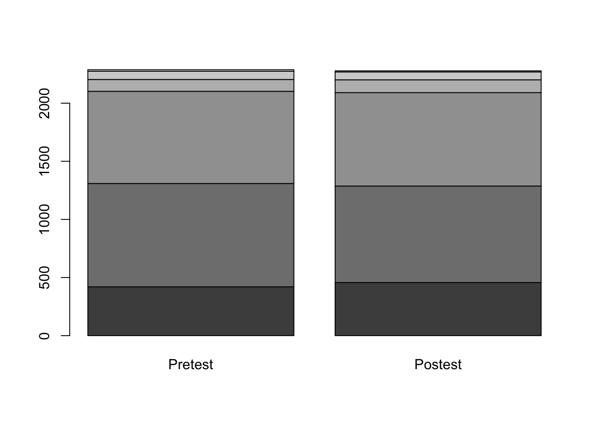
barplot(as.matrix(datP26), xlab="Test aplicado", col=c("red", "yellow","blue","orange","green","gray"), beside = T, ylim=c(0, 1030), legend=row.names(datP26))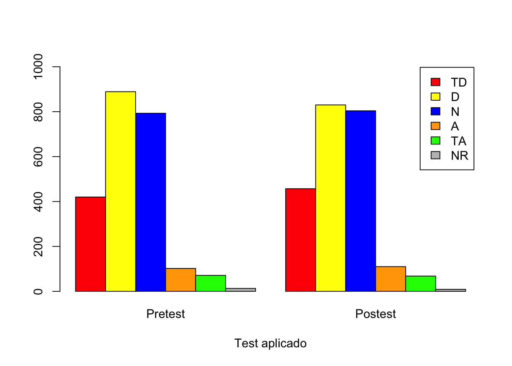
# Cambien beside = F
barplot(as.matrix(datP26), xlab="Test aplicado", col=c("red", "yellow","blue","orange","green","gray"), beside = T, xlim=c(0, 1030), legend=row.names(datP26), horiz = T, width = 3)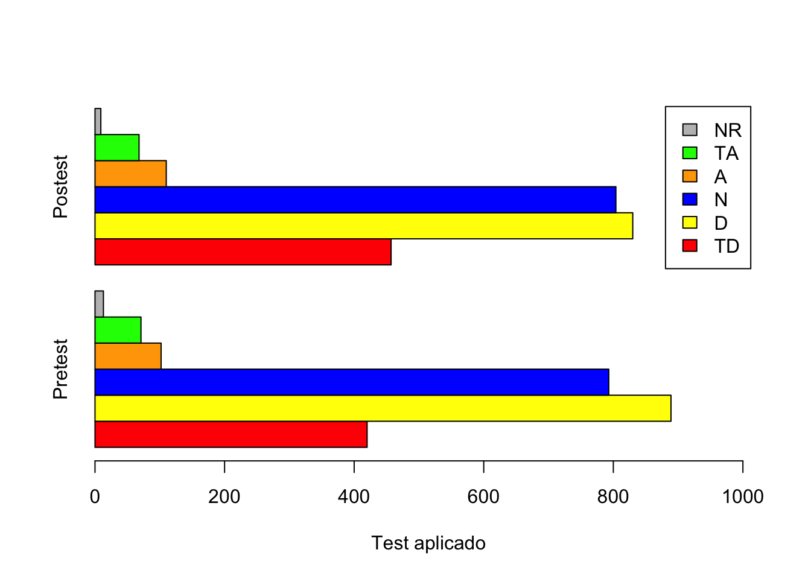
- xlab=“Test aplicado”: Añade una etiqueta al eje X, en este caso “Test aplicado”.
- col=c(“red”, “yellow”, …): Define los colores de las barras. Cada barra tendrá un color diferente, representado en el vector de colores.
- beside = T: Establece que las barras deben aparecer una al lado de la otra en lugar de estar apiladas.
- ylim=c(0, 1030): Define los límites del eje Y, permitiendo que los valores en el gráfico se extiendan de 0 a 1030.
- legend=row.names(datP26): Añade una leyenda al gráfico utilizando los nombres de las filas de los datos como etiquetas para cada conjunto de barras.
- horiz = T: Cambia la orientación del gráfico para que las barras se dispongan horizontalmente.
- width = 3: Ajusta el ancho de las barras.
En este otro segmento transponemos la matriz de datos apra intercambiar las filas por columnas y volver a generar el gráfico.
## TD D N A TA NR
## Pretest 420 889 793 102 71 13
## Postest 457 830 804 110 68 9barplot(as.matrix(datP26t), xlab="Test aplicado", col=c("blue","green"), beside = T, ylim=c(0, 1030), legend=row.names(datP26t))
Dónde:
- t(datP26): La función t() transpone la matriz, es decir, intercambia las filas y las columnas.
- as.matrix(datP26t): Volvemos a convertir los datos transpuestos en una matriz para generar el gráfico.
- col=c(“blue”,“green”): En este caso, asignamos dos colores a las barras.
7.2 legend() siempre nos pide los siguientes argumentos.
legend: Las etiquetas de los datos que queremos describir con la leyenda. Por ejemplo, si tenemos cuatro categorías a describir, proporcionamos un vector de cuatro cadenas de texto.
fill: Los colores que acompañan a las etiquetas definidas con legend. Estos colores tienen que coincidir con los que hemos usado en el gráfico.
x y y: Las coordenadas en pixeles, en las que estará ubicada la leyenda.
Podemos dar como argumento a x alguno de los siguientes argumentos, para ubicar automáticamente la leyenda: “bottomright”, “bottom”, “bottomleft”, “left”, “topleft”, “top”, “topright”, “right”, “center”.
title: Para poner título a la leyenda.
## [1] "compacto" "compacto" "compacto" "compacto" "compacto"
## [6] "compacto" "compacto" "compacto" "compacto" "compacto"
## [11] "compacto" "compacto" "compacto" "compacto" "compacto"
## [16] "mediano" "mediano" "mediano" "suv" "suv"
## [21] "suv" "suv" "suv" "2asientos" "2asientos"
## [26] "2asientos" "2asientos" "2asientos" "suv" "suv"
## [31] "suv" "suv" "mediano" "mediano" "mediano"
## [36] "mediano" "mediano" "minivan" "minivan" "minivan"
## [41] "minivan" "minivan" "minivan" "minivan" "minivan"
## [46] "minivan" "minivan" "minivan" "pickup" "pickup"
## [51] "pickup" "pickup" "pickup" "pickup" "pickup"
## [56] "pickup" "pickup" "suv" "suv" "suv"
## [61] "suv" "suv" "suv" "suv" "pickup"
## [66] "pickup" "pickup" "pickup" "pickup" "pickup"
## [71] "pickup" "pickup" "pickup" "pickup" "suv"
## [76] "suv" "suv" "suv" "suv" "suv"
## [81] "suv" "suv" "suv" "pickup" "pickup"
## [86] "pickup" "pickup" "pickup" "pickup" "pickup"
## [91] "subcompacto" "subcompacto" "subcompacto" "subcompacto" "subcompacto"
## [96] "subcompacto" "subcompacto" "subcompacto" "subcompacto" "subcompacto"
## [101] "subcompacto" "subcompacto" "subcompacto" "subcompacto" "subcompacto"
## [106] "subcompacto" "subcompacto" "subcompacto" "mediano" "mediano"
## [111] "mediano" "mediano" "mediano" "mediano" "mediano"
## [116] "subcompacto" "subcompacto" "subcompacto" "subcompacto" "subcompacto"
## [121] "subcompacto" "subcompacto" "suv" "suv" "suv"
## [126] "suv" "suv" "suv" "suv" "suv"
## [131] "suv" "suv" "suv" "suv" "suv"
## [136] "suv" "suv" "suv" "suv" "suv"
## [141] "suv" "compacto" "compacto" "mediano" "mediano"
## [146] "mediano" "mediano" "mediano" "mediano" "mediano"
## [151] "suv" "suv" "suv" "suv" "mediano"
## [156] "mediano" "mediano" "mediano" "mediano" "suv"
## [161] "suv" "suv" "suv" "suv" "suv"
## [166] "subcompacto" "subcompacto" "subcompacto" "subcompacto" "compacto"
## [171] "compacto" "compacto" "compacto" "suv" "suv"
## [176] "suv" "suv" "suv" "suv" "mediano"
## [181] "mediano" "mediano" "mediano" "mediano" "mediano"
## [186] "mediano" "compacto" "compacto" "compacto" "compacto"
## [191] "compacto" "compacto" "compacto" "compacto" "compacto"
## [196] "compacto" "compacto" "compacto" "suv" "suv"
## [201] "pickup" "pickup" "pickup" "pickup" "pickup"
## [206] "pickup" "pickup" "compacto" "compacto" "compacto"
## [211] "compacto" "compacto" "compacto" "compacto" "compacto"
## [216] "compacto" "compacto" "compacto" "compacto" "compacto"
## [221] "compacto" "subcompacto" "subcompacto" "subcompacto" "subcompacto"
## [226] "subcompacto" "subcompacto" "mediano" "mediano" "mediano"
## [231] "mediano" "mediano" "mediano" "mediano"## millas_clase
## 2asientos compacto mediano minivan pickup subcompacto
## 5 47 41 11 33 35
## suv
## 62barplot(table(millas_clase), xlab="Test aplicado", col=c("red", "yellow","blue","orange","green","gray"), beside = T, ylim=c(0, 100))
legend(x = "topright", legend=row.names(table(millas_clase)), fill = c("red", "yellow","blue","orange","green","gray")) 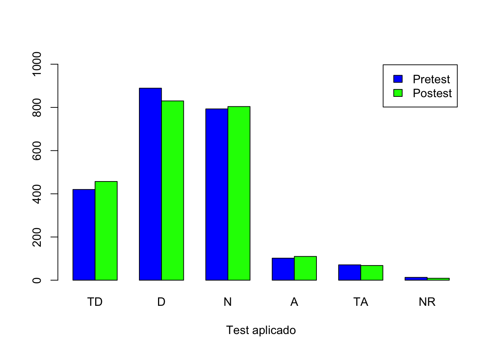
## Length Class Mode
## 234 character character## tibble [234 × 11] (S3: tbl_df/tbl/data.frame)
## $ fabricante : chr [1:234] "audi" "audi" "audi" "audi" ...
## $ modelo : chr [1:234] "a4" "a4" "a4" "a4" ...
## $ cilindrada : num [1:234] 1.8 1.8 2 2 2.8 2.8 3.1 1.8 1.8 2 ...
## $ anio : int [1:234] 1999 1999 2008 2008 1999 1999 2008 1999 1999 2008 ...
## $ cilindros : int [1:234] 4 4 4 4 6 6 6 4 4 4 ...
## $ transmision: chr [1:234] "auto(l5)" "manual(m5)" "manual(m6)" "auto(av)" ...
## $ traccion : chr [1:234] "d" "d" "d" "d" ...
## $ ciudad : int [1:234] 18 21 20 21 16 18 18 18 16 20 ...
## $ autopista : int [1:234] 29 29 31 30 26 26 27 26 25 28 ...
## $ combustible: chr [1:234] "p" "p" "p" "p" ...
## $ clase : chr [1:234] "compacto" "compacto" "compacto" "compacto" ...Entre las variables de millas se encuentran:
motor: tamaño del motor del automóvil, en litros.
autopista: eficiencia del uso de combustible de un automóvil encarretera, en millas por galón. Al recorrer la misma distancia, un automóvil de baja eficiencia consume más combustible que un automóvil de alta eficiencia.
Formato General:
ggplot(data =
A continuación, echemos un vistazo a un gráfico de barras. Los gráficos de barras parecen simples, pero son interesantes porque revelan algo sutil sobre los gráficos. Considera un gráfico de barras básico, como uno realizado con geom_bar(). El siguiente gráfico muestra la cantidad total de diamantes en el conjunto de datos diamantes, agrupados por la variable corte. El conjunto de datos diamantes se encuentra en el paquete datos y contiene información sobre 54000 diamantes, incluido el precio, el quilate, el color, la claridad y el corte de cada uno. El gráfico muestra que hay más diamantes disponibles con cortes de alta calidad que con cortes de baja calidad.
## tibble [53,940 × 10] (S3: tbl_df/tbl/data.frame)
## $ precio : int [1:53940] 326 326 327 334 335 336 336 337 337 338 ...
## $ quilate : num [1:53940] 0.23 0.21 0.23 0.29 0.31 0.24 0.24 0.26 0.22 0.23 ...
## $ corte : Ord.factor w/ 5 levels "Regular"<"Bueno"<..: 5 4 2 4 2 3 3 3 1 3 ...
## $ color : Ord.factor w/ 7 levels "D"<"E"<"F"<"G"<..: 2 2 2 6 7 7 6 5 2 5 ...
## $ claridad : Ord.factor w/ 8 levels "I1"<"SI2"<"SI1"<..: 2 3 5 4 2 6 7 3 4 5 ...
## $ profundidad: num [1:53940] 61.5 59.8 56.9 62.4 63.3 62.8 62.3 61.9 65.1 59.4 ...
## $ tabla : num [1:53940] 55 61 65 58 58 57 57 55 61 61 ...
## $ x : num [1:53940] 3.95 3.89 4.05 4.2 4.34 3.94 3.95 4.07 3.87 4 ...
## $ y : num [1:53940] 3.98 3.84 4.07 4.23 4.35 3.96 3.98 4.11 3.78 4.05 ...
## $ z : num [1:53940] 2.43 2.31 2.31 2.63 2.75 2.48 2.47 2.53 2.49 2.39 ...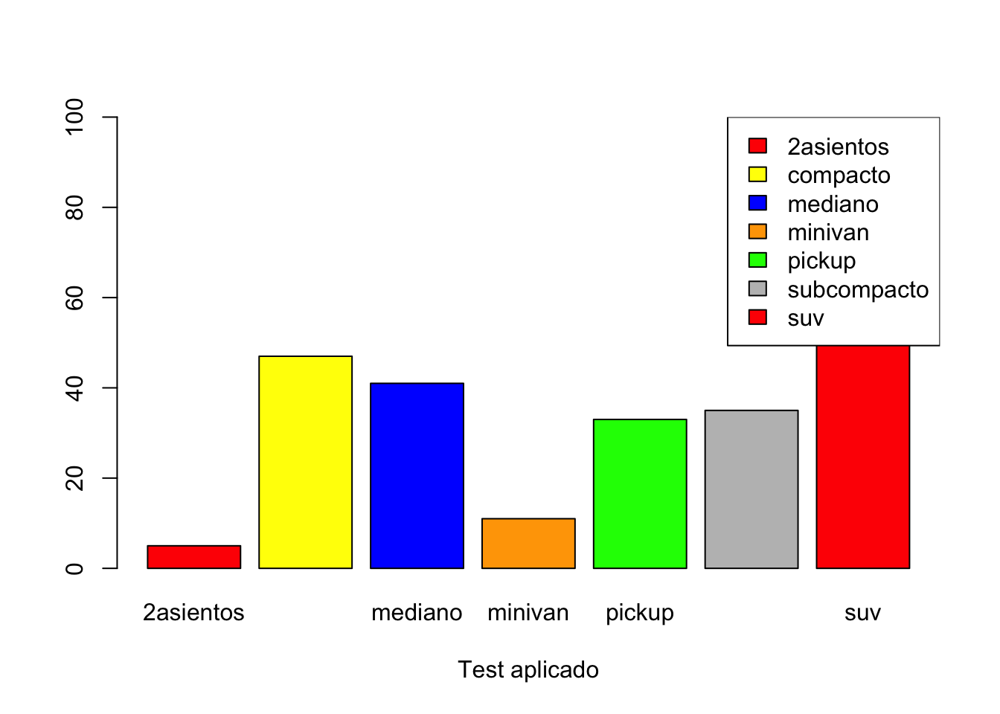
ggplot(data = diamantes) +
geom_bar(mapping = aes(x = claridad)) # aes: define una variable para la estética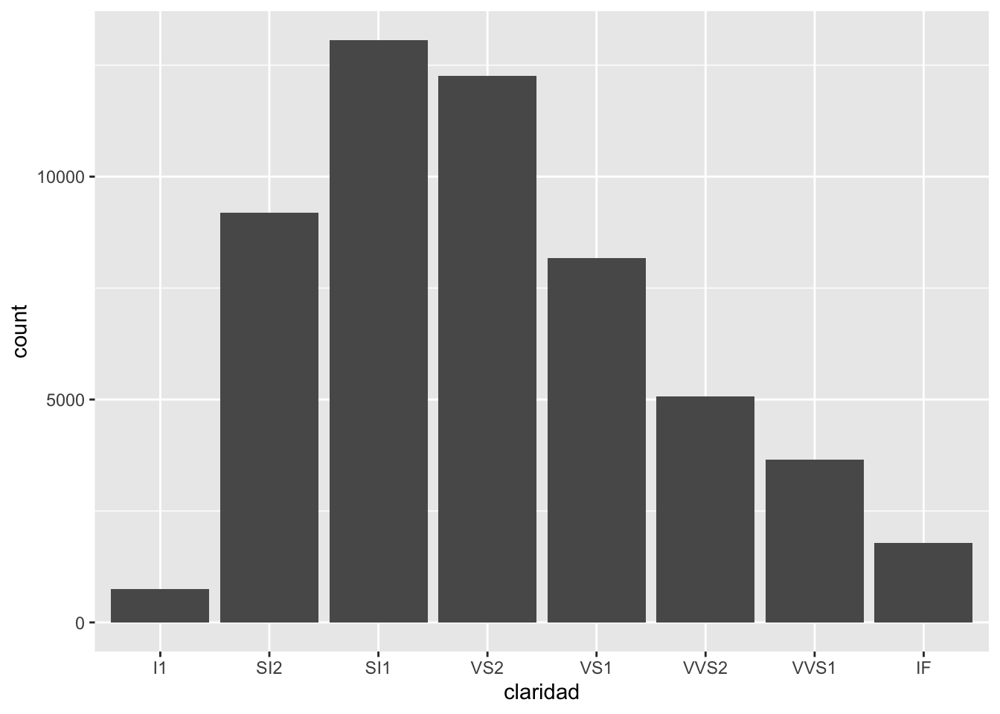
Si se desea ver solo las proporciones, en lugar de los valores netos:
## Warning: The dot-dot notation (`..prop..`) was deprecated in ggplot2 3.4.0.
## ℹ Please use `after_stat(prop)` instead.
## This warning is displayed once every 8 hours.
## Call `lifecycle::last_lifecycle_warnings()` to see where this warning was
## generated.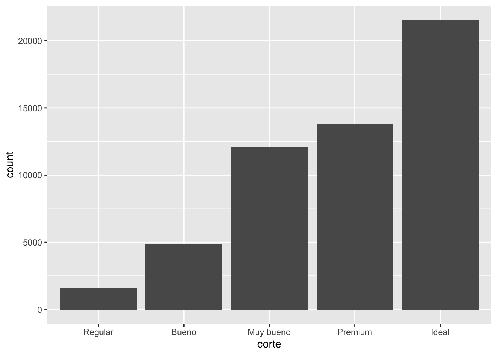 El siguiente gráfico muestras estadísticas resumen como máximo (max), mínimo (min) y la mediana de los datos profundidad, según clasificación por corte
ggplot(data = diamantes) +
stat_summary(
mapping = aes(x = corte, y = profundidad),
fun.ymin = min,
fun.ymax = max,
fun.y = median
)## Warning: The `fun.y` argument of `stat_summary()` is deprecated as of ggplot2 3.3.0.
## ℹ Please use the `fun` argument instead.
## This warning is displayed once every 8 hours.
## Call `lifecycle::last_lifecycle_warnings()` to see where this warning was
## generated.## Warning: The `fun.ymin` argument of `stat_summary()` is deprecated as of ggplot2 3.3.0.
## ℹ Please use the `fun.min` argument instead.
## This warning is displayed once every 8 hours.
## Call `lifecycle::last_lifecycle_warnings()` to see where this warning was
## generated.## Warning: The `fun.ymax` argument of `stat_summary()` is deprecated as of ggplot2 3.3.0.
## ℹ Please use the `fun.max` argument instead.
## This warning is displayed once every 8 hours.
## Call `lifecycle::last_lifecycle_warnings()` to see where this warning was
## generated.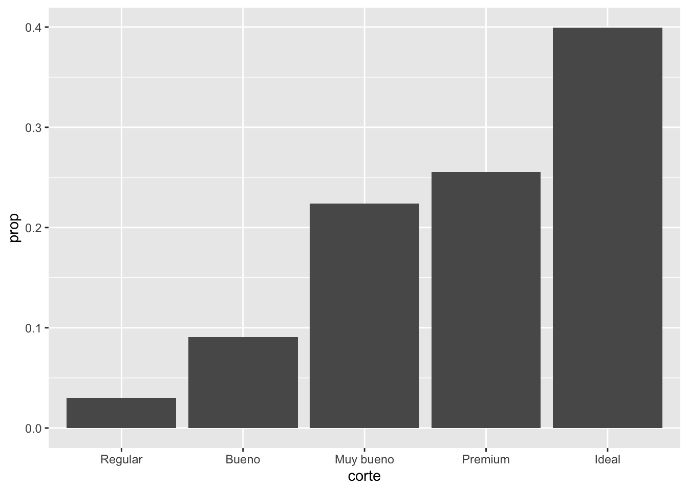
Para colorear los gráficos, se puede usar como referencia un vector, que podría ser alguna de las variables de la base de datos.
Tome en cuenta que el parámetro colour se refiere al borde, pero si lo que desea es colorear la barra, debe usar fill
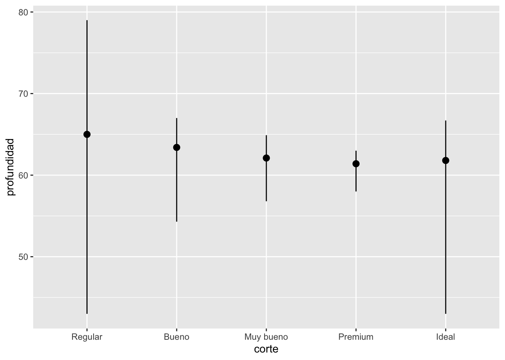
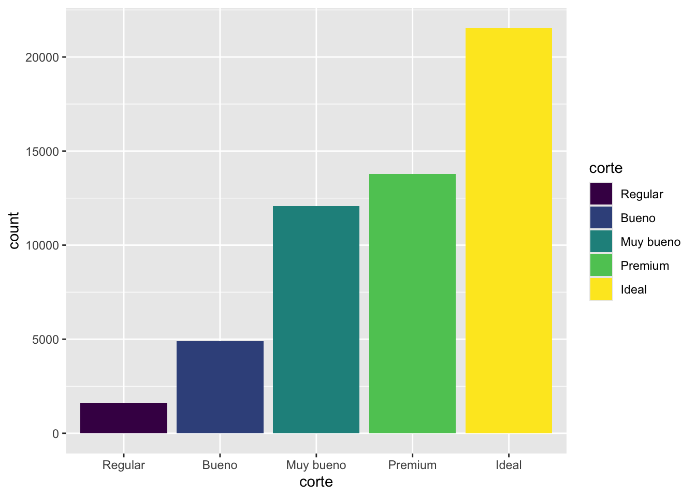
Asignemos otra variable para fill. Las barras están apiladas:
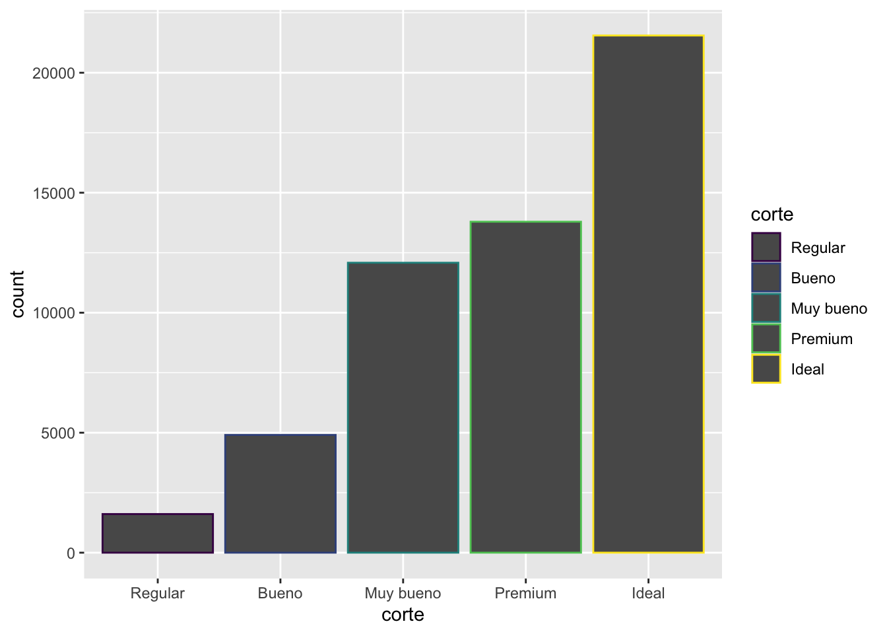
El apilamiento se realiza automáticamente mediante el ajuste de posición especificado por el argumento position. Explore otras opciones para position: “identity”, “dodge”, “fill”
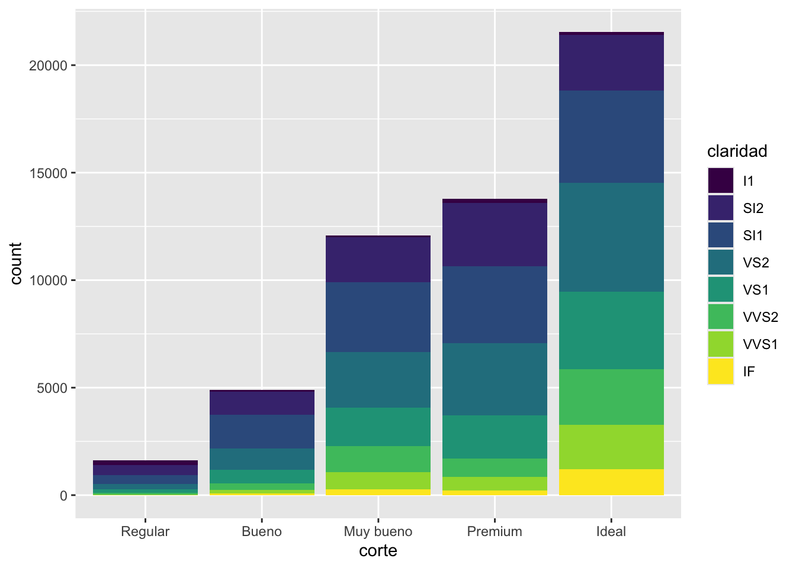
# barras quedan superpuestas, una detrás de la otra. El alpha es para darle transparencia para que se vean las barras que están detrás.
#ggplot(data = diamantes) +
# geom_bar(mapping = aes(x = corte, colour = claridad, fill = claridad), position = "jitter")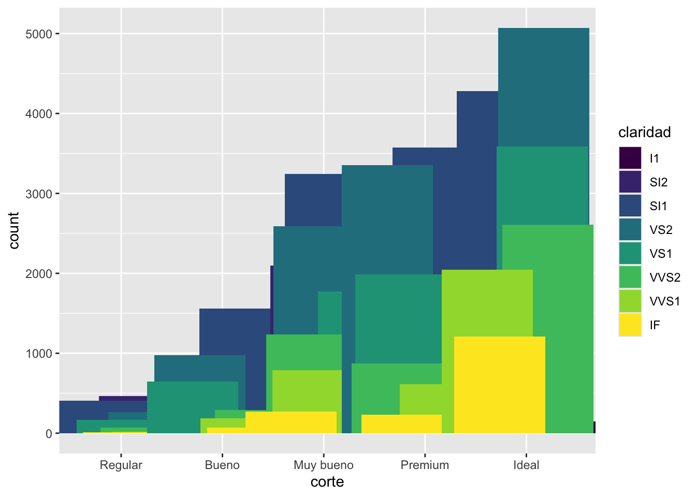
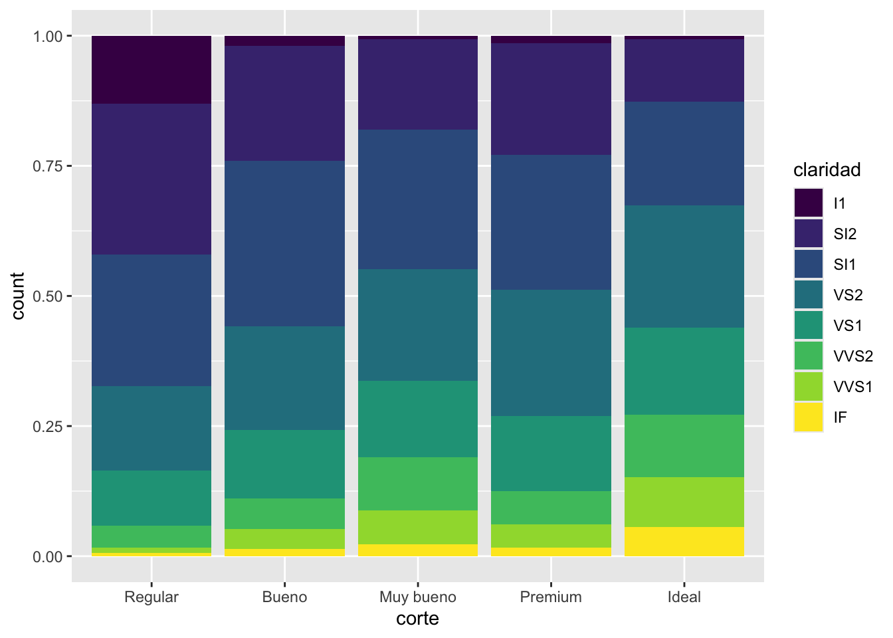
Si se desean las barras horrizontales, se agrega la instrucción coord_flip() y automáticamente ordena las barras de mayor a menor
ggplot(data = diamantes) +
geom_bar(mapping = aes(x = corte, fill = corte), position = "dodge") +
coord_flip()
bar <- ggplot(data = diamantes) +
geom_bar(
mapping = aes(x = corte, fill = corte),
show.legend = FALSE,
width = 1
) +
theme(aspect.ratio = 1) +
labs(x = NULL, y = NULL)
bar + coord_flip()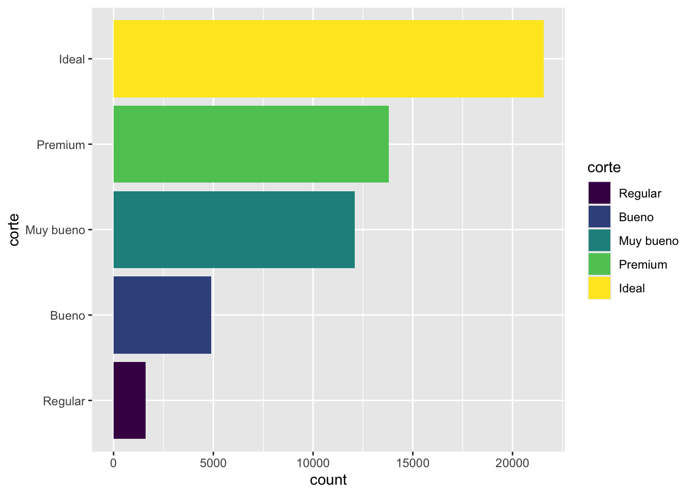

bar <- ggplot(data = diamantes) +
geom_bar(mapping = aes(x = corte, fill = claridad),
show.legend = F,
width = 0.75) +
theme(aspect.ratio = 1) +
labs(x = NULL, y = NULL)
bar + coord_flip()
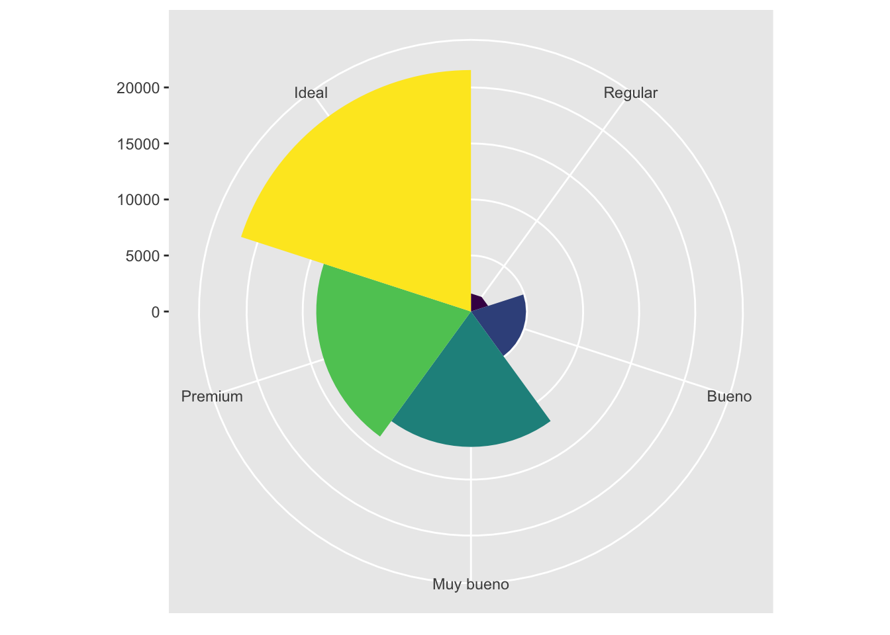
diaman_dat <- diamantes %>%
group_by(corte) %>% # agrupar todo por clase
summarise(conteo = n())
diaman_dat## # A tibble: 5 × 2
## corte conteo
## <ord> <int>
## 1 Regular 1610
## 2 Bueno 4906
## 3 Muy bueno 12082
## 4 Premium 13791
## 5 Ideal 21551g6 <- ggplot(diaman_dat, aes(y = reorder(corte, conteo), x = conteo))
g6 +
geom_lollipop(point.colour = "steelblue", point.size = 2, horizontal = TRUE)## Warning: Using the `size` aesthetic with geom_segment was deprecated in ggplot2 3.4.0.
## ℹ Please use the `linewidth` aesthetic instead.
## This warning is displayed once every 8 hours.
## Call `lifecycle::last_lifecycle_warnings()` to see where this warning was
## generated.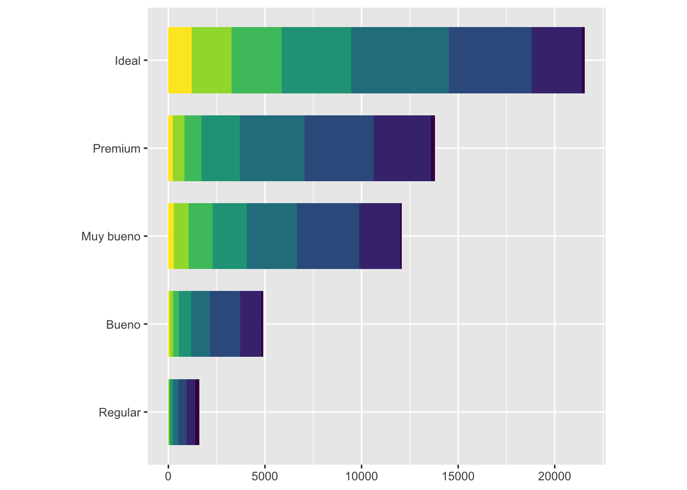
Verticalmente:
g6 <- ggplot(diaman_dat, aes(y = conteo , x = reorder(corte, conteo)))
g6 +
geom_lollipop(point.colour = "steelblue", point.size = 2)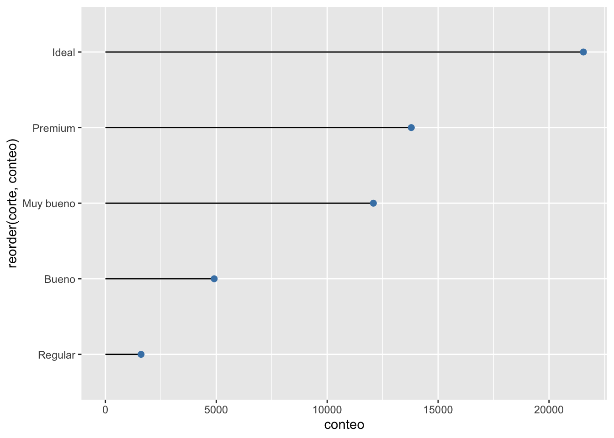
g6 <- ggplot(diaman_dat, aes(y = conteo , x = reorder(corte, conteo)))
g6 +
geom_lollipop(point.colour = "steelblue", point.size = 13, size = 1) +
geom_text(aes(label = conteo), color = "white") +
theme_minimal() +
xlab("Clase") +
ylab("conteo")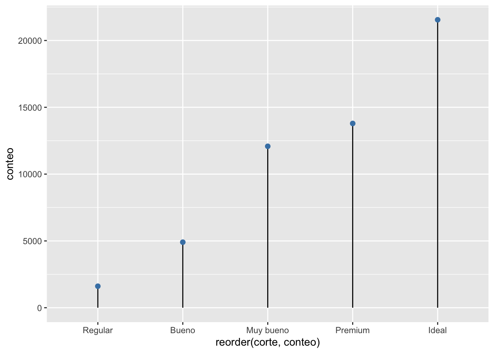
7.3 Grafico de pastel
Primero, agrupamos los datos por la variable color utilizando group_by() y calculamos el conteo para cada categoría con summarise().
- group_by(color): Agrupa los datos del conjunto diamantes según la variable color. Cada grupo corresponderá a una categoría distinta de colores de diamantes.
- summarise(conteo = n()): Resume los datos calculando el número de observaciones (n()) en cada grupo, es decir, el conteo de diamantes de cada color.
El código en R agrupa los datos de diamantes por la variable de corte, calcula el número de diamantes en cada categoría, y luego calcula el porcentaje que representa cada categoría. Además, organiza estos porcentajes y define la posición para las etiquetas dentro de un gráfico de pastel, lo que facilita la visualización de la proporción de cada categoría en el total de diamantes.
diaman_dat <-diamantes %>%
group_by(corte) %>% # agrupar todo por clase de var corte
summarise(conteo = n()) # hace un resumen de conteo de cada categ.
diaman_dat## # A tibble: 5 × 2
## corte conteo
## <ord> <int>
## 1 Regular 1610
## 2 Bueno 4906
## 3 Muy bueno 12082
## 4 Premium 13791
## 5 Ideal 21551count.data <- diaman_dat %>%
arrange(desc(conteo)) %>%
mutate(porcent = round(conteo/sum(conteo)*100,1))
count.data## # A tibble: 5 × 3
## corte conteo porcent
## <ord> <int> <dbl>
## 1 Ideal 21551 40
## 2 Premium 13791 25.6
## 3 Muy bueno 12082 22.4
## 4 Bueno 4906 9.1
## 5 Regular 1610 3# Agregar posición de la etiqueta de porcentaje
count.data <- count.data %>%
arrange(desc(corte)) %>%
mutate(lab.ypos = cumsum(porcent) - 0.5*porcent)
count.data## # A tibble: 5 × 4
## corte conteo porcent lab.ypos
## <ord> <int> <dbl> <dbl>
## 1 Ideal 21551 40 20
## 2 Premium 13791 25.6 52.8
## 3 Muy bueno 12082 22.4 76.8
## 4 Bueno 4906 9.1 92.6
## 5 Regular 1610 3 98.6Crearemos un grafico de pastel (pie) usando verbos de ggplot2 . A diferencia de los gráficos de barras, se podría pensar que existe una versión geom_ ´para los gráficos de pastel, pero en realidad un gráfico de pastel es una variación de una gráfico de barras en coordenadas polares.
Key function: geom_bar() + coord_polar(). Agregar texto a las etiquetas: geom_text() Cambio del relleno del color de forma manual: scale_color_manual() Apply theme_void() para eliminar los ejes, el background, etc
mycols <- c("#0073C2FF", "#EFC000FF", "#868686FF", "#CD534CFF", "#00FF00")
ggplot(count.data, aes(x = "", y = porcent, fill = corte)) +
geom_bar(width = 1, stat = "identity", color = "transparent") +
coord_polar("y", start = 0)+
geom_text(aes(y = lab.ypos, label = porcent), color = "white")+
scale_fill_manual(values = mycols) +
theme_void()
7.4 Gráfico de dona
Cambios a considerar: 1. x = 2 2. Eliminar width en geom_bar() 3. agregar xlim(0.5,2.5)
El hoyo se crea con 1 y 3
ggplot(count.data, aes(x = 2, y = porcent, fill = corte)) +
geom_bar(stat = "identity", color = "white") +
coord_polar("y", start = 0)+
geom_text(aes(y = lab.ypos, label = porcent), color = "white")+
scale_fill_manual(values = mycols) +
theme_void()+
xlim (0.5,2.5)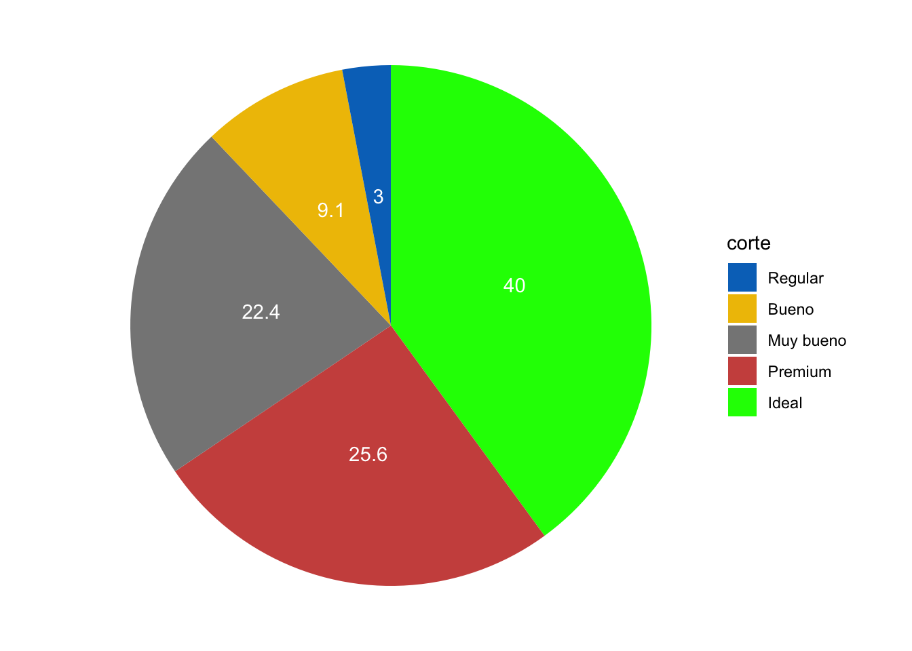
## tibble [336,776 × 19] (S3: tbl_df/tbl/data.frame)
## $ anio : int [1:336776] 2013 2013 2013 2013 2013 2013 2013 2013 2013 2013 ...
## $ mes : int [1:336776] 1 1 1 1 1 1 1 1 1 1 ...
## $ dia : int [1:336776] 1 1 1 1 1 1 1 1 1 1 ...
## $ horario_salida : int [1:336776] 517 533 542 544 554 554 555 557 557 558 ...
## $ salida_programada : int [1:336776] 515 529 540 545 600 558 600 600 600 600 ...
## $ atraso_salida : num [1:336776] 2 4 2 -1 -6 -4 -5 -3 -3 -2 ...
## $ horario_llegada : int [1:336776] 830 850 923 1004 812 740 913 709 838 753 ...
## $ llegada_programada: int [1:336776] 819 830 850 1022 837 728 854 723 846 745 ...
## $ atraso_llegada : num [1:336776] 11 20 33 -18 -25 12 19 -14 -8 8 ...
## $ aerolinea : chr [1:336776] "UA" "UA" "AA" "B6" ...
## $ vuelo : int [1:336776] 1545 1714 1141 725 461 1696 507 5708 79 301 ...
## $ codigo_cola : chr [1:336776] "N14228" "N24211" "N619AA" "N804JB" ...
## $ origen : chr [1:336776] "EWR" "LGA" "JFK" "JFK" ...
## $ destino : chr [1:336776] "IAH" "IAH" "MIA" "BQN" ...
## $ tiempo_vuelo : num [1:336776] 227 227 160 183 116 150 158 53 140 138 ...
## $ distancia : num [1:336776] 1400 1416 1089 1576 762 ...
## $ hora : num [1:336776] 5 5 5 5 6 5 6 6 6 6 ...
## $ minuto : num [1:336776] 15 29 40 45 0 58 0 0 0 0 ...
## $ fecha_hora : POSIXct[1:336776], format: "2013-01-01 05:00:00" "2013-01-01 05:00:00" ...##
## 1 5 6 7 8 9 10 11 12 13 14 15 16
## 1 1953 25951 22821 27242 20312 16708 16033 18181 19956 21706 23888 23002
## 17 18 19 20 21 22 23
## 24426 21783 21441 16739 10933 2639 10617.5 Para practicar
- Cargue el paquete datos en R el cual contiene varias bases de datos que pueden ser utilizadas para el trabajo con los temas del curso. Trabaje con los datos de vuelos y realice lo siguiente:
- Brevemente explique de qué tratan los datos
- Realice un gráfico de barras verticales con alguna de las variables presentes en el dataset vuelos. Esta variable debe cumplir los requerimientos explicados en clase 4.Realice un gráfico de barras horizontal con alguna de las variables. Al igual que el caso anterior, debe elegir una variable que se ajuste a los requerimientos discutidos en clase para este tipo de gráficos. 5.Elija una de las variables y construya un gráfico de pastel. La variable debe tener las condiciones apropiadas.
- Tome en cuenta que para cada gráfico debe considerar las recomendaciones estudiadas en clases, las cuáles las pueden encontrar en la presentación. Para cada uno de los gráficos, haga una breve interpretación de lo observado.
Nota: es posible que tengan un problema para cargar la base de datos vuelos, debido a que se requiere del paquete nycflights13.